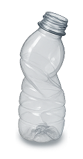

플라스틱 분리배출 가이드
지구를 위한 분리배출 함께해요.
플라스틱이란?
플라스틱은 석유를 원료로 한 합성 고분자 물질로, 가볍고 튼튼하며 다양한 형태로 가공됩니다.
우리가 흔히 아는 페트병, 플라스틱 용기, 포장재 등이 이에 해당됩니다.
재활용이 가능한 단일재질과 재활용이 어려운 복합재질로 나뉘기 때문에 재질과 상태를 잘 확인하고 올바르게 분리배출하는 것이 필요합니다.
분리배출 핵심 가이드
종류/재질별 플라스틱 분리배출 가이드
-
페트병
라벨 제거, 뚜껑 분리, 내용물 비우고 압착
투명 페트병은 따로 배출
-
플라스틱 컵
빨대 제거, 내용물 비우고 세척
뚜껑은 pp, 컵은 pet인 경우도 있음
-
일회용 도시락 용기
음식물 제거 후 세척
국물 얼룩 있으면 종량제봉투
-
배달음식 용기
기름기 닦고 세척
기름기 심하면 재활용 불가
-
세제/ 샴푸 통
남은 내용물 제거 후 세척
펌프는 다른 재질일 수 있어 분리
-
요구르트 병, 음료수 뚜껑
깨끗이 씻어 배출
부피 작아도 재활용 가능
-
아이스크림통, 플라스틱 그릇
내용물 제거, 세척
전자레인지용기, 밀폐용기 가능
-
플라스틱 장난감
크기 크면 대형 폐기물
작은 건 종량제봉투
-
플라스틱 옷걸이
재질 확인 후 배출 or 폐기
금속 혼합된 경우 종량제봉투
-
치약 튜브, 화장품 용기
멀티재질은 일반쓰레기
단일재질이라도 오염이 심하면 폐기
투명 페트병은 고품질 재활용 대상!
최근 ‘고품질 재활용’을 위해 투명 페트병을 일반 플라스틱과 구분해서 따로 분리배출 하고 있어요.
깨끗하고 투명한 PET는 옷, 가방, 신발 등으로 업사이클 할 수 있어 재활용 가치가 높아요.
*유색·오염된 페트병은 일반 플라스틱으로 분류
투명 페트병 분리배출 가이드
-
1.
내용물 비우기
-
2.
부착상표 등 라벨 제거
-
3.
뚜껑 분리
-
4.
압착 후 별도 수거함 배출

분리배출 불가 플라스틱
-
오염된 플라스틱 포장지
기름기 음식물 얼룩 재활용 불가
-
플라스틱 빨대
재질이 작아 분리세척 어려움
-
블러스터 포장
접합된 복합재질 재활용 불가
-
속이 비닐로 된 종이컵
재질 분리 어려움
-
플라스틱 칫솔, 면도기
멀티재질로 분리 어려움
-
테이프, 접착제 묻은 플라스틱
접착제 성분으로 재활용 방해
-
PVC재질 (랩, 일부 플라스틱)
소각 시 유해가스 발생, 재활용 어려움
-
플라스틱 튜브형 화장품 용기
내부 오염, 멀티재질로 분리가 어려움
자주 묻는 질문
Q. 샴푸, 세제, 막걸리 등 내용물이 남은 경우 배출이 가능한가요?
가급적 내용물을 깨끗히 씻어서 플라스틱류에 배출합니다.
Q. 향수, 샴푸 등 펌핑식 용기는 어떻게 배출하나요?
펌핑식 용기의 부속품(노즐, 스프링 등)은 별도 배출 후 본체만 깨끗히 씻어서 플라스틱류에 배출합니다.
Q. 고무대야는 재활용이 가능한가요?
재활용이 가능하나 여러 종류의 합성수지가 포함되어 재활용 가치가 낮으므로 종량제 봉투에 배출하거나 대형폐기물 신고 후 배출수수료를 납부하고 배출합니다.
*규격에 따른 수수료는 해당 구청 문의
Q. 완구류 등은 어떻게 배출하나요?
재질별로 분리 후 플라스틱류로 배출합니다.
단, 재질별 분리가 어려운 대형 완구류(유모차, 유아용 그네, 유아용 자동차, 목마 등)는 대형폐기물로 신고 후 배출수수료를 납부하고 배출합니다.
Q. 알약 포장재는 재활용이 가능한가요?
알약 포장재는 복합재질(플라스틱(윗면)+알루미늄(아랫면))로서 각각 재활용은 가능하지만, 두 재질을 분리하기가 어려우므로 종량제 봉투로 배출합니다.